atomBase
The atomBase class is the smallest structural unit of which one can build larger structures. It holds real physical properties of atoms defined in the properties section can return parameters and data necessary for different simulation types.
Copyright (c) 2013, Daniel Schick, André Bojahr, Marc Herzog, Roman Shayduk, Clemens von Korff Schmising All rights reserved.
License: BSD (use/copy/change/redistribute on own risk, mention the authors)
Contents
Classdef
Each atomBase instance and all inherited class objects follow handle semantics. Hence a copy of such object will not copy the object itself, but only a handle to that object.
classdef atomBase < handle
Properties
properties(SetAccess=public,GetAccess=public)
symbol % STRING symbol of the element
ID % STRING identifier of the atom, may be different from symbol and/or name
name % STRING name of the element (generic)
atomicNumberZ = 0; % FLOAT Z atomic number
massNumberA = 0; % FLOAT A atomic mass number
ionicity = 0; % INTEGER ionicity of the atom
mass = 0; % FLOAT mass of the atom [kg]
atomicFormFactorCoeff = 0; % VECTOR atomic form factor coefficients for energy-dependent atomic form factor
cromerMannCoeff = zeros(1,6); % VECTOR cromer-mann coefficients for angular-dependent atomic form factor
end%properties
Methods
methods
Constructor
Is executed each time an instance of this class is created. Only the symbol input is obligatory.
function obj = atomBase(symbol,varargin) % initialize input parser and define defaults and validators p = inputParser; p.addRequired('symbol' , @ischar); p.addOptional('ID' , symbol, @ischar); p.addOptional('ionicity', 0 , @(x)(isnumeric(x))); % parse the input p.parse(symbol,varargin{:}); % assign parser results to object properties obj.symbol = p.Results.symbol; obj.ID = genvarname(p.Results.ID); obj.ionicity = p.Results.ionicity; % Check if constructor call is from a sub-class if ~isa(obj,'atomMixed') % call is from atomBase instance % read element specific data from file with the following % headers: symbol name atomicNumberZ massNumberA filename = 'elements.dat'; if exist(filename,'file') fid = fopen(filename); temp = textscan(fid, '%s %s %u %f', 'HeaderLines', 1); fclose(fid); else error('File %s not found!\nMake sure the path "/parameters/elements/" is in your MATLAB SearchPath!', filename); end%if % Find the data entry for the atom. row = find(ismember(temp{1}, symbol)==1); obj.name = temp{2}{row}; obj.atomicNumberZ = double(temp{3}(row)); obj.massNumberA = temp{4}(row); obj.mass = obj.massNumberA * constants.u; % Read the atomic form factors and Cromer-Mann coefficients % from file. obj.atomicFormFactorCoeff = obj.readAtomicFormFactorCoeff; obj.cromerMannCoeff = obj.readCromerMannCoeff(); end%if end%function
Display
This method is called to display informations of the instance.
function disp(obj) disp('Atom with the following properties') disp(['ID : ' obj.ID]); disp(['symbol : ' obj.symbol]); disp(['name : ' obj.name]); disp(['atomic number Z : ' num2str(obj.atomicNumberZ)]); disp(['mass number A : ' num2str(obj.massNumberA)]); disp(['mass [kg] : ' num2str(obj.mass)]); disp(['ionicity : ' num2str(obj.ionicity)]); disp(['Cromer Mann coeff. : ' num2str(obj.cromerMannCoeff)]); end%function
readAtomicFormFactorCoeff
The atomic form factor 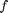 in dependence from the energy 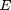 is read from a parameter file given by Ref. [3].
function f = readAtomicFormFactorCoeff(obj) filename = [lower(obj.symbol) '.nff']; if exist(filename,'file') temp = importdata(filename,'\t',1); f = temp.data; else error('File %s not found!\nMake sure the path "/parameters/atomicFormFactors/" is in your MATLAB SearchPath!', filename); end%if end%function
getAtomicFormFactor
Returns the complex atomic form factor 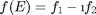 for the energy [J].
function f = getAtomicFormFactor(obj,E) E = E/constants.e_0; % convert energy from [J] in [eV] % interpolate the real and imaginary part in dependence of E f1 = interp1(obj.atomicFormFactorCoeff(:,1),obj.atomicFormFactorCoeff(:,2), E ,'PCHIP'); f2 = interp1(obj.atomicFormFactorCoeff(:,1),obj.atomicFormFactorCoeff(:,3), E ,'PCHIP'); % Convention of Ref. [2] (p. 11, footnote) is a negative $f_2$ f = f1 - f2*1i; end%function
readCromerMannCoeff
The Cromer-Mann coefficients (Ref. [1]) are read from a parameter file and are returned in the following order:
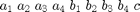
%for the element with atomic number $Z$ and ionicity (unique index). function CM = readCromerMannCoeff(obj) filename = 'cromermann.txt'; if exist(filename,'file') temp = importdata(filename,'\t',1); c = temp.data; else error('File %s not found!\nMake sure the path "/parameters/atomicFormFactors/" is in your MATLAB SearchPath!', filename); end%if CM = c(c(:,1) == obj.atomicNumberZ & c(:,2) == obj.ionicity,3:end); end%function
getCMAtomicFormFactor
Returns the atomic form factor in dependence of the energy [J] and the 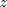-component of the scattering vector 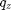 [m^-1] (Ref. [1]). Since the CM coefficients are fitted for in [Ang^-1] we have to convert it before!
function f = getCMAtomicFormFactor(obj,E,qz)
qz = qz/units.ang^-1; % qz in [Ang^-1]
See Ref. [2] (p. 235).
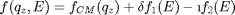
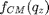 is given in Ref. 1:
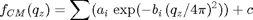
f_CM = obj.cromerMannCoeff(1:4) * exp(-obj.cromerMannCoeff(5:8)' *(qz./(4*pi)).^2) + obj.cromerMannCoeff(9);
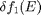 is the dispersion correction:
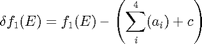
Thus:

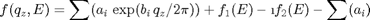
f = f_CM + obj.getAtomicFormFactor(E) - (sum(obj.cromerMannCoeff(1:4)) + obj.cromerMannCoeff(9));
end%function
end%methods
end%classdef
References
- D. T. Cromer & J. B. Mann (1968). X-ray scattering factors computed from numerical Hartree–Fock wave functions. Acta Crystallographica Section A, 24(2), 321–324. doi:10.1107/S0567739468000550
- J. Als-Nielson, & D. McMorrow (2001). Elements of Modern X-Ray Physics. New York: John Wiley & Sons, Ltd. doi:10.1002/9781119998365
- B. L. Henke, E. M. Gullikson & J. C. Davis (1993). X-Ray Interactions: Photoabsorption, Scattering, Transmission, and Reflection at E = 50-30,000 eV, Z = 1-92. Atomic Data and Nuclear Data Tables, 54(2), 181–342. doi:10.1006/adnd.1993.1013